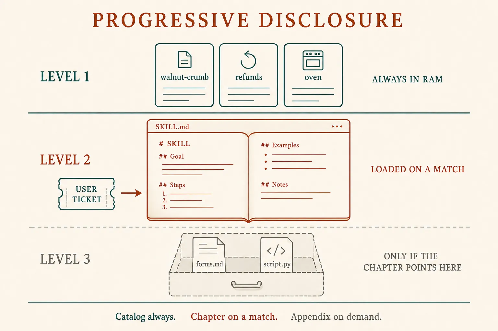
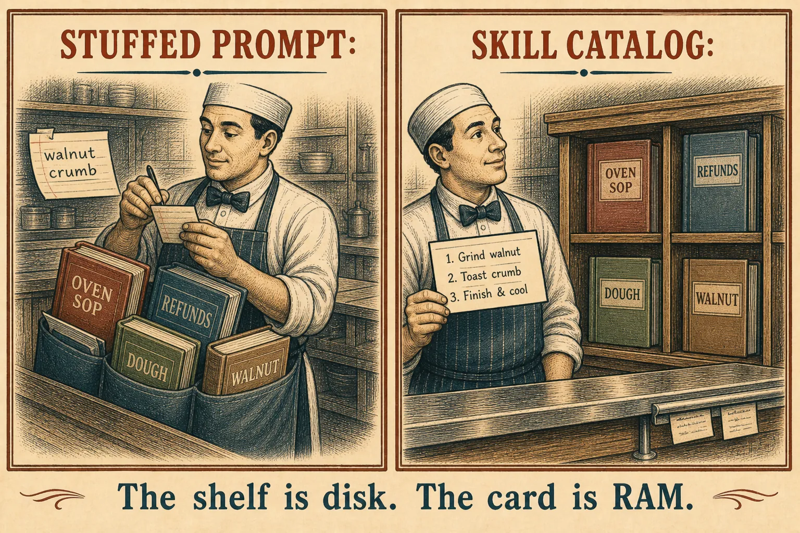
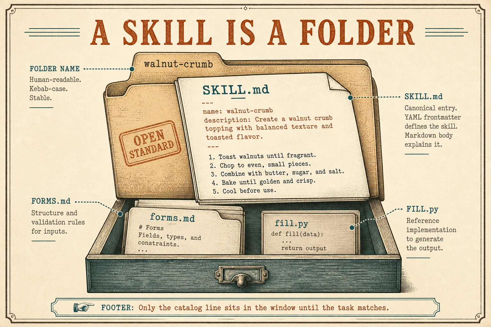

Skills
Load the chapter, not the shelf
You already know the window is RAM (lesson 0002) and that a harness spends it on purpose (lesson 0007). A skill is how you stop stuffing every SOP into the system prompt: keep a table of contents in RAM, and read the chapter only when this task needs it.
What this is. A skill is a folder with a SKILL.md: YAML name + description on top, instructions in the body, optional extra files. Anthropic calls the loading rule progressive disclosure. Equipping agents for the real world with Agent Skills
What this is not. A second model. A tool (a slip you run). RAG (pages you looked up). A plugin store — that is how a folder arrives on disk; tonight is the folder. Cursor and Claude Code already do this with the same open format. Agent Skills spec · Cursor skills
- 1 · CatalogName + description. Always in the system prompt. Cheap.
- 2 · ChapterThe SKILL.md body. Loaded only on a match.
- 3 · AppendixExtra files or scripts. Only if the chapter points at them.
Like a manual: contents, then the chapter, then the appendix. Not the whole binder in your pocket.

Same window as lesson 0002. The harness chooses which layer to paste.
The three rents
At startup the harness pastes every installed skill’s name and description into the system prompt — on the order of a hundred tokens each, not the whole file. If the task matches a description, the model writes a read slip (lesson 0005) and the harness pastes the body. Linked files wait. Scripts can be run so only their output enters RAM. Claude · Agent Skills overview
The inner agent loop did not change. The harness chose what to paste into the window.

Kitchen only to make the rent concrete. The load-bearing picture is the three layers above.
One skill · walnut-crumb/SKILL.md
--- name: walnut-crumb description: Toast walnuts and fold them into the mix. Use for the walnut crumb special. --- # Walnut crumb 1. Toast the walnuts. 2. Fold into the mix. 3. Ninety seconds on the stone. If the stone is cold, read oven/SKILL.md. Do not load refunds/ for this ticket.
What this shows. Frontmatter is the catalog line — what it does and when to use it. The numbered body is the chapter. oven/SKILL.md is an appendix pointer: still on disk until the stone is cold. A stuffed prompt would have included refunds anyway.

Open standard: a directory, not a vendor menu item. Cursor and Claude Code both read this shape.
The description is the match
Anthropic: pay special attention to name and description — that is what the model uses to decide whether to trigger the skill. The spec says the description should name what it does and when to use it. Vague catalog lines mean the chapter never opens, or the wrong chapter does. Same essay, “Think from Claude’s perspective” · agentskills.io
Same folder · two catalog lines
# Poor — the model cannot match this description: Helps with walnuts. # Useful — what, and when description: Toast walnuts and fold them into the mix. Use for the walnut crumb special.
What this shows. The body can be perfect and still never load if the catalog line is “helps with walnuts.” You are writing a search snippet for the model, not a title for humans.
Skill: watch the window
Same question, three spends — then a fourth if the chapter points onward. Stuffed puts every SOP in RAM. Catalog puts three labels in RAM and writes a read slip. Load chapter runs that slip. Appendix runs a second read only because the chapter named it.
Same ticket, three windows
Not a tool, not RAG
Tool
The model writes a slip. Your code runs it. Live state or an action (lesson 0005).
RAG
You find a few pages and paste them. Facts from a pile (lesson 0004).
Skill
You wrote a how-to folder. The harness pastes the matching chapter into RAM.
A skill may bundle a script. Then the script is a tool the chapter told the model to run — still propose · run · paste. The load-bearing idea tonight is the chapter, not the script.
Plugins, MCP, and “always-on” editor rules are neighboring names. A plugin is typically how a bundle of skills (and sometimes tools) gets installed. MCP is still USB-C for tools and data. A rule that is always in the prompt is a stuffed chapter — useful when it must apply to every turn; wasteful when it does not. Compaction is lesson 0009, not a skill.
Check
Primary source. The three levels and the PDF walkthrough in Equipping agents for the real world with Agent Skills. Then the token table in Claude’s overview. Format: agentskills.io. You are sitting in an editor that implements it: Cursor · Agent Skills.
Card: skills. Last box: the harness.